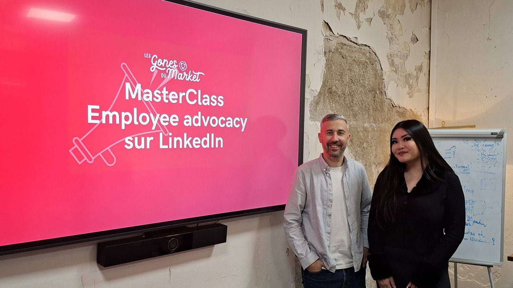

La vie du club
Nos événements en images




Le club qui réunit heads of marketing, chargé·es de com' et experts marketing lyonnais pour échanger, apprendre et grandir ensemble. Sans bullshit.
Demander à rejoindre le clubLes Gones du Market' c'est un espace de confiance pour toutes les personnes qui font du marketing à Lyon. Pas un réseau de façade, une vraie communauté.
Pas besoin d'un grand titre pour rejoindre les Gones. Ce qui compte, c'est ta curiosité, ton envie d'échanger et ton ancrage dans le marketing lyonnais.
Afterworks avec speakers, petits-déjeuners en format atelier, masterclasses thématiques, déjeuner de fin d'année... chaque édition a son propre format.
Pas de paillettes. Des retours d'expérience réels, des échanges entre pairs, et une entraide active au sein de la communauté marketing lyonnaise.
Des sujets concrets, choisis par et pour la communauté marketing lyonnaise.
La stack ne se consolide pas, elle se stratifie. SaaS pour l'orchestration, outils IA-natifs pour la création, solutions maison pour la différenciation. La vraie question : est-ce que ça vaut vraiment son coût ?
On ne force jamais un collectif à publier. On crée les conditions pour que ça devienne possible. Rituels éditoriaux, réduction de la friction, dynamique collective plutôt que performance individuelle.
Défendre son budget avec 3 indicateurs compris par la direction vaut mieux que 15 métriques. Alignement Marketing × Sales, authenticité face à la surcharge informationnelle, ROI court terme sans sacrifier le long terme.
"On veut faire de la vidéo" n'est pas une stratégie. Objectifs clairs, cible définie, formats adaptés aux canaux, recyclage intelligent (1 webinar = 20 shorts), et mesure du ROI.
Format atelier en petits groupes : chaque marketeur présente son contexte et ses grandes lignes. La communauté joue le rôle de coach : challenge constructif, idées fraîches, retours d'expérience concrets.
Signature email comme micro-canal mesurable, micro-influenceurs comme levier d'amplification authentique, Intent Data pour transformer les signaux faibles en actions à fort impact. Faire plus avec moins.

Quels leviers d'acquisition font vraiment bouger les résultats en 2026 ? SEO, paid, influence, presse. Tour d'horizon avec des marketeurs qui les ont testés.
Format atelier en petits groupes : tu présentes ton plan, la communauté te challenge. Repartir avec des pistes concrètes pour l'année à venir.
Construire et défendre sa marque dans un contexte saturé. Identité, cohérence, brand equity : comment la communauté marketing lyonnaise aborde le sujet.
Le rendez-vous pour clôturer l'année ensemble, faire le bilan et retrouver toute la communauté autour d'un bon repas lyonnais.
Trop d'outils tue l'outil. La stack se stratifie : SaaS pour l'orchestration, outils IA-natifs pour la création, solutions maison pour la différenciation. La vraie question : est-ce que ça vaut vraiment son coût ?
On ne force jamais un collectif à publier. On crée les conditions pour que ça devienne possible. Rituels éditoriaux, réduction de la friction, passer du personal branding au personal média.
Défendre son budget avec 3 indicateurs compris par la direction vaut mieux que 15 métriques. ROI, alignement Sales & Marketing, authenticité. Des retours terrain sans langue de bois.
Bilan de l'année entre Gones. 8 événements, 175 membres, une communauté qui grandit.
"On veut faire de la vidéo" n'est pas une stratégie. Objectifs clairs, formats adaptés, recyclage intelligent, impact de l'IA sur la production.
Format atelier en petits groupes : intelligence collective pour affiner les stratégies. Fondations solides, alignement interne, IA, nouveaux leviers.
Signature email comme micro-canal marketing mesurable, micro-influenceurs, Intent Data pour transformer les signaux faibles en actions à fort impact. Faire plus avec moins.
Digitalisation de la consommation vidéo, géographie comme levier de croissance, Amazon, renouveau du BtoB. Les Gones partenaires de l'événement.
Suivez l'actualité du club sur LinkedIn avec #lesgonesdumarket
Retrouvez les replays et extraits de nos événements sur notre chaîne YouTube.
Voir la chaîne YouTubeTu travailles dans le marketing à Lyon ? Envoie-nous ta candidature, on revient vers toi rapidement.